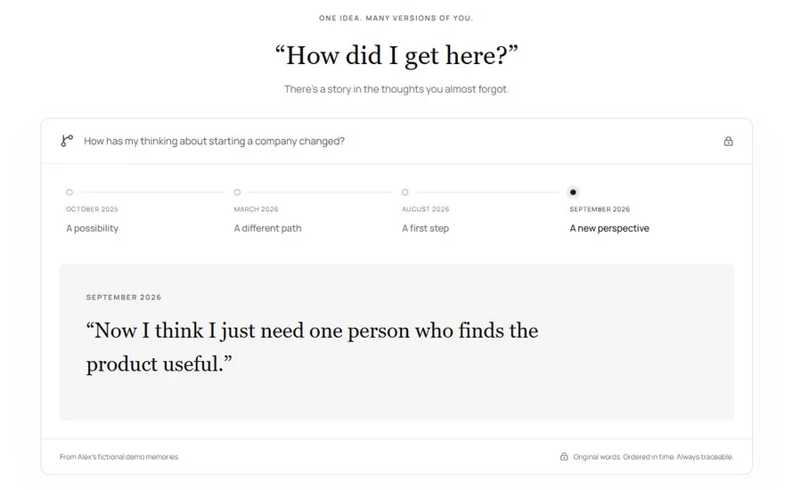

GENAI / RETRIEVAL / PRIVACY
Live productThenfold
Private memory infrastructure for how your thinking evolves.
Personal knowledge changes over time. I designed and shipped a memory platform that retrieves the right moment, answers with original evidence, and separates local and cloud AI execution.
- Automated tests
- 157
- Execution paths
- Local + cloud

Engineering decisions
- Retrieve before vector indexing completes. Combine Pinecone semantic search with an owner-scoped PostgreSQL keyword path.
- Handle time deterministically. Resolve first/latest, before/after and date-range questions before building source context.
- Keep the account boundary intact. Use Supabase RLS, isolated vector namespaces, verified sessions and a Memory OFF boundary.
- Reject invalid evidence. Attach source IDs to generated paragraphs and construct the final answer through server-side citation validation.
Privacy and validation
AES-256-GCM encryption for local IndexedDB storage. Qwen via WebLLM/WebGPU for local inference; Gemini via OpenRouter for cloud inference.
Cloud text AI requires ZDR-compatible routing. Cross-account retrieval and Memory OFF are tested. AI receives bounded source context, and original memories remain inspectable.
Built withNext.js · TypeScript · Supabase / PostgreSQL · Pinecone · MiniLM · Transformers.js / ONNX · Vercel
- 01User + AI modeLocal or cloud execution
- 02Intent + retrievalPinecone semantic search
Owner-scoped keyword search - 03Temporal selectionDates, first/latest, before/after
- 04Bounded contextRelevant, owned sources only
- 05AI generationGemini / cloud
Qwen / local - 06Validated answerCitation checks + original evidence